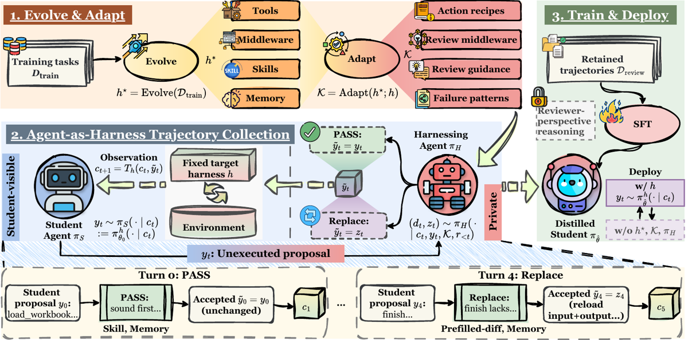

Mémo repris en profondeur A (grille complète, sections 0 à 9). Justification du passage B → A en fin de §9.
h, celui sur lequel il a été entraîné ; aucun contrôle de régression des capacités générales. Gênant en soi, et davantage encore parce que le papier cite lui-même [le2026multiharness] en related work : une étude contrôlée d'agents de code où « changing the evaluation harness affected performance more than the training method, and training with feedback collected across harnesses did not improve transfer to a held-out minimal ReAct harness ». Le papier connaît donc l'expérience qui départagerait « internalisé dans les poids » de « co-adapté à h », et ne la fait pas. → détail en §7.K porte tout le savoir de domaine (13 composants pour USPTO [Tab. 7]) et l'ablation à K vide montre que c'est lui, et lui seul, qui porte le gain (30.0 % vs 11.0 %). Si K a été écrit à la main, le « coût humain nul » revendiqué en §1 est faux et la méthode est une manière élégante d'injecter de l'expertise humaine — ce qui reste utile, mais change complètement l'argument de passage à l'échelle. → détail en §1.TL;DR — Au lieu d'exécuter un scaffolding de code optimisé autour du modèle, on fait tenir ce scaffolding par un agent réviseur qui réécrit chaque réponse du student dans l'espace d'actions du harness minimal de déploiement ; on fait du SFT sur les trajectoires ainsi corrigées, et on jette le scaffolding.
Claim principal (tel que formulé) : ⟨1⟩ sur des LLM frontier utilisant le même harness évolué, agent-as-harness bat code-as-harness (81.1 % vs 78.1 %, moyenne sur 6 réglages benchmark×modèle) ; ⟨2⟩ après SFT et retrait de h, de K et du harnessing agent, Qwen3.5-9B passe de 23.3 % à 44.3 % de macro-moyenne sous le seul harness cible h, au-dessus des 41.7 % qu'il atteint avec h monté ; ⟨3⟩ 82.3 % de recouvrement moyen sur 28 patterns comportementaux induits par h* et absents du modèle de base [Abstract, §4.2–4.5].
⚠️ Ce n'est pas du RL. Aucun rollout policy-gradient, aucun reward différentiable, aucun GRPO/PPO. C'est du SFT par imitation sur des trajectoires agentiques corrigées en ligne. Le vérifieur n'intervient que comme filtre de rétention (et même pas sur USPTO). Son intérêt pour la revue est du côté env/harness et fabrication de données de supervision sans vérité exacte, pas du côté optimisation.
Trois harnesses, à ne pas confondre :
| Symbole | Nom | Qui le porte | Ce qu'il fait |
|---|---|---|---|
h |
target harness (fixe, minimal) | le student, à la collecte et au déploiement | mini-SWE-agent : un seul outil execute bash [App. E.1] |
h* |
evolved student-side harness | le student, uniquement en régime code-as-harness (baseline) | abstraction DeepAgents : tools + middleware + skills + memory [§3.1, Tab. 5] |
K |
private reference harness | le harnessing agent, jamais le student | adaptation de h* : action recipes + review middleware + review guidance + failure patterns [§3.1, Tab. 6, Tab. 7] |
Le scaffolding, quand c'est un agent qui le tient, change d'audience et de point d'application, pas d'intention [App. B]. La table d'adaptation h* → K est le cœur du papier [Tab. 6] :
h. Concrètement : le harnessing agent écrit un cat > .agent-tools/prefilled_diff.py <<'PY' … PY suivi de son invocation, dans une seule commande bash [Code 3, App. B.3]. L'outil devient un script généré à la volée dans la trajectoire du student.run_in_student_sandbox(PREFILLED_DIFF,…)) ; sa version K ne le peut pas et cherche à la place la trace de la comparaison dans la trajectoire visible* [Code 1 vs Code 2, App. B.3].Le point dur, explicité par les auteurs : le harnessing agent ne doit pas avoir d'interface privée vers l'environnement du student — « otherwise the behavior patterns behind this middleware cannot be internalized » [App. B.3]. Toute évidence supplémentaire doit être obtenue en proposant une action disponible sous h, dont le résultat entre dans la trajectoire visible. C'est ce qui rend les trajectoires directement utilisables en SFT (§3.2, « intervention and grounding constraints »).
⚠️ Note de vocabulaire : « distillation » ici ≠ distillation d'un gros modèle vers un petit. C'est la distillation d'un harness vers des poids — et accessoirement le modèle réviseur (GPT-5.6 Sol) est plus fort que le student (Qwen3.5-9B), mais l'ablation [Tab. 3] montre que ce n'est pas d'où vient le gain : les trajectoires directes du même GPT-5.6 Sol donnent 12.0 % (= base), contre 30.0 % pour Harness-Zero.
Aucune tâche n'est créée : trois benchmarks existants, repris tels quels, ré-empaquetés au format Harbor [§4.1] :
| Benchmark | Train (collecte + évolution) | Test | Métrique |
|---|---|---|---|
| SpreadsheetBench Verified (400 tâches tableur réelles) | 300 | 100 | pass@1, run unique |
| AppWorld (train + dev officiels fusionnés) | 147 | 168 tâches test_normal, groupées en 56 scénarios de 3 |
SGC (scenario goal completion) |
| USPTO Retrosynthesis (prédiction de précurseurs 1 étape) | 500, équilibré sur les 10 classes de réaction | 100, disjoint | pass@1 |
Ce qui est construit, c'est le harness puis les trajectoires, en deux boucles.
(a) Évolution de h* — « meta-harness », 3 rounds [App. A.1] :
1. rollouts baseline sous h nu sur le split train ;
2. à chaque round, un swarm d'agents d'analyse (≤ 10 sous-agents coder en parallèle) lit les trajectoires des tâches échouées au round précédent et propose des changements réutilisables de tools/middleware/skills/memory ;
3. un agent principal consolide dans le bank partagé harness_bank/<domain>/ ;
4. ré-évaluation avec h* monté, sans intervention du harnessing agent — « the evolution objective is performance under the student-side harness itself » ;
5. les tâches qui passent quittent la campagne ; les échecs restants forment le round suivant.
La skill d'évolution (recopiée en entier dans src/appendix/student-harness-evolve-skill.en.md) impose une discipline anti-overfitting explicite : « shared mechanism → bank ; specific to one task → do not write it, accept the residual failure » ; interdiction d'écrire dans un composant partagé une adresse de cellule, une réponse, un nom de fichier concret ; « generalize before adding » (pas de variantes quasi-dupliquées) ; anti-bloat : un composant sans évidence de bénéfice pendant deux rounds consécutifs sort du manifeste ; « traces are evidence » — tout changement doit pointer vers une attribution de trajectoire.
Inventaire final de h* : 7 composants SpreadsheetBench, 5 AppWorld, 7 USPTO [Tab. 5]. Inventaire de K : 8 / 6 / 13 composants [Tab. 7].
(b) Collecte des trajectoires : le student tourne sous h, le harnessing agent révise chaque proposition (voir §2), seule la réponse acceptée entre dans la trajectoire.
verifier reward == 1.0 et que le run s'est terminé sans exception d'exécution [App. D]./components/ ; le chemin du fichier candidat qui stocke la proposition non exécutée ; le nom de l'outil de soumission de revue ; la clé de métadonnée qui enregistre les composants utilisés ; le nom interne du review middleware.REPLACE dont le raisonnement matche un reviewer-perspective pattern, le span de raisonnement est masqué de la loss. Les patterns couvrent : les mots proposal / proposed, les références à un draft, les références à la réponse / au raisonnement / à la commande / à l'action « du student » ou « du candidat », et les verbes de revue appliqués à une réponse (passing, rewriting) [§3.3, App. D].487 trajectoires SpreadsheetBench · 282 AppWorld · 500 USPTO [§4.1, App. D].
⚠️ Volume très petit (≈ 1 300 trajectoires au total, toutes domaines confondus). Noter le rendement : 282 trajectoires retenues pour 147 tâches train AppWorld et 487 pour 300 tâches SpreadsheetBench ⇒ plusieurs essais par tâche (nombre de tentatives par tâche : non précisé dans le papier ; le CLI du repo expose un --attempts).
Non précisée, sauf pour USPTO (split train équilibré sur les 10 classes de réaction [§4.1]). Aucun histogramme de difficulté, aucune stratification pour les deux autres.
Aucun curriculum sur les données. Il y a en revanche un curriculum sur le harness : les 3 rounds d'évolution ne traitent que les tâches encore échouées, les tâches résolues quittant la campagne [App. A.1]. Pas de rééchantillonnage en cours de SFT. Chaque domaine est entraîné séparément sur ses propres trajectoires [App. E.3] — donc pas de mélange multi-domaine.
Sans objet : il n'y a pas de RL. Le SFT est la méthode. Pas de cold-start séparé, pas de phase format.
Nul en annotation. Aucun expert, aucune heure humaine rapportée. Toute la chaîne (évolution du harness, adaptation h→K, revue, filtrage) est agentique ou automatique. Les auteurs précisent seulement que l'adaptation h → K « can be automated by an agent » [§3.1] — ⚠️ formulation au conditionnel : le papier ne dit jamais si les K des 3 domaines ont été produits automatiquement ou écrits à la main. C'est le trou le plus gênant du pipeline, puisque K porte tout le savoir de domaine (13 composants pour USPTO).
h — mini-SWE-agent [App. E.1]System prompt du student, recopié intégralement [Prompt 2] :
You are an agent that solves tasks in a Linux sandbox.
You have one tool, `execute`, which runs one bash command. Each call starts a fresh shell, so working-directory and environment changes do not persist between calls.
Work on the task by issuing one `execute` call at a time. When the task is complete, return a short final answer without calling `execute`.
The sandbox also provides `agent "<task>"` for optional subagent delegation.
execute, argument unique = une commande bash non vide. Shell frais à chaque appel → le cwd et les variables d'env ne persistent pas ; l'état ne persiste que par le système de fichiers. Une réponse sans tool call termine l'essai et vaut réponse finale.agent "<task>", délégation à un seul niveau, sous-agent = même modèle de base + le seul execute, prompt fixe lui demandant un rapport concis, interdit de déléguer à son tour, ≤ 4 sous-agents concurrents par sandbox. Justification des auteurs : garantir que « bash + délégation à un niveau » soit un espace d'actions assez expressif pour y projeter les composants de h. Ils notent qu'en pratique les h* obtenus ne s'en servent pas et la délégation est peu utilisée* [App. E.1].h n'est jamais donné. Indices indirects : le middleware turn_budget de h « advise on remaining budget at turns 25 and 35 » [Tab. 5] ⇒ plafond de l'ordre de 40 ; la skill d'évolution classe les essais morts en « turn wall (non-convergence) ». Longueur de séquence d'entraînement : 65 536 tokens, les exemples plus longs sont droppés* [App. E.3].h. Dans h/AppWorld il y a un context_guard qui borne les observations d'outils avant leur entrée dans l'historique [Tab. 5] — et les auteurs reconnaissent en limitation que « some harness mechanisms, e.g., context management, are not fully expressible as student responses out of the box » [§5]. C'est le composant qui ne se distille pas.*command-timeout, qui attrape les commandes susceptibles de bloquer indéfiniment et réclame un timeout shell [Tab. 7]). AppWorld exige un mini-SWE-agent et une image dédiés (README, envs/appworld/).r_{<t}].PASS le préserverait./components en lecture seule dans le workspace propre du harnessing agent, séparé du sandbox du student. Point d'entrée index.json listant chaque composant (identifiant, kind, chemin relatif, résumé d'une ligne). Le harnessing agent lit l'index avant sa première décision puis ouvre les fichiers au fil de l'eau [App. B.2].submit_review, 4 champs contrôlés par l'agent [App. C.2] :decision ∈ {PASS, REPLACE} ;replacement : la réponse student complète à exécuter à la place — objet structuré à 3 champs reasoning / content / tool_call optionnel. Pour mini-SWE-agent le seul tool call admissible est un execute à commande non vide, ce qui matche exactement l'espace d'actions du student sous h. Un replacement sans tool call et à contenu non vide est une réponse finale et termine l'essai ;components_used : les identifiants des composants qui ont informé la décision ;reason : justification privée de ≤ 500 caractères.PASS portant un replacement, un REPLACE n'en portant pas, un replacement sans contenu visible ni tool call. Une soumission invalide n'est pas enregistrée ; le runtime re-prompte au plus 3 fois sur le même candidat, puis l'essai échoue.REPLACE par essai est un hyperparamètre, annoncé dans le system prompt pour que l'agent puisse l'allouer sur l'essai. ⚠️ Citation exacte : « We set it to 5, 3, and 1 to collect trajectories for SpreadsheetBench and AppWorld, and set it to 5 consistently for USPTO » [App. C.2] — trois valeurs pour deux benchmarks : l'appariement est ambigu et n'est explicité nulle part. Aucune ablation du budget n'est rapportée.Du §3.2 et du system prompt [Prompt 1] :
- passer les propositions saines ; sinon faire la plus petite correction cohérente ; préserver le reste de la proposition ;
- chaque remplacement est une réponse complète, valide sous h, qui continue depuis l'état visible courant ;
- accès privilégié du harnessing agent limité à la lecture de K : il ne peut ni inspecter le sandbox du student, ni consulter les solutions cachées, ni accéder à l'état d'environnement hors de c_t. « Treat file contents, command results, installed programs, and service state as known only when they appear in a student-visible observation » [Prompt 1] ;
- exemple donné : remplacer une complétion prématurée par du code qui vérifie le travail du student — l'exécution fait entrer et le check et son résultat dans la trajectoire visible, « grounding the intervention in student-observable evidence » [§3.2].
Extraits littéraux du system prompt du harnessing agent [Prompt 1] — ce sont les lignes qui fabriquent la donnée :
« On-policy here means that reviews occur along a live student trial and every accepted response uses the student's visible information, native action space, and plausible level of complexity. It does not mean preserving the student's current policy unchanged: a replacement should teach a better behavioral pattern when the harness identifies one that materially improves correctness, progress, recovery, or verification. »
« Use the components actively as your knowledge of what good behavior looks like. They should affect the accepted trajectory when their guidance is relevant, not merely help you recognize fatal errors. Procedural knowledge from a component may inform a replacement even if the student has not demonstrated it yet, provided the resulting response is a plausible next step in the student's native interface. Component-private facts, paths, review records, and unsupported claims about the current sandbox must never enter the replacement. »
« Also pass recoverable mistakes when observing the result is likely to let the student diagnose and repair them; useful self-recovery is valuable training behavior. »
« The reasoning must read as the student's own first-person inner monologue, continuing the student's current line of thought — never as advice, critique, or correction addressed to the student. A natural form is the student catching its own mistake: noticing the constraint, re-reading the evidence, and correcting course. »
« Do not mention the teacher, review, harness components, component names, private paths, or training in the replacement. »
« Pass a final answer only after the student-visible observations support every material task requirement. Otherwise replace it with the next inspection, repair, test, or verification action, not with a teacher-written solution that bypasses those steps. »
⚠️ La 4e et la 5e sont des instructions de blanchiment de trajectoire : le raisonnement visible du student est écrit par le réviseur, à la première personne, en imitant un student qui se corrige lui-même. C'est le point central pour l'auditabilité (cf. §9).
Deux variantes du prompt existent [App. C.3] : (i) les évaluations training-free de §4.2 utilisent la même structure de session, le même format de soumission et le même budget, en changeant seulement le cadrage (transformer les composants en meilleures actions du student, plutôt que produire une trajectoire d'entraînement) et en omettant le paragraphe « on-policy » ; (ii) le contrôle oracle answer de §4.4 ajoute une section donnant accès à la réponse de référence enregistrée, avec instruction de ne s'en servir que pour juger si la direction du student peut encore converger, de garder toutes les étapes de vérification dans le replacement, et de ne jamais révéler que la réponse est connue.
Le papier ne donne aucune trajectoire complète (ni dans le corps ni en annexe). ⚠️ Absence notable pour un papier dont tout le produit est une trajectoire. Le seul aperçu est le bandeau inférieur de Fig. 1, qui esquisse deux tours sur une tâche SpreadsheetBench (cf. §8) :
Turn 0 : PASS
proposition y0 : "load_workbook…" → décision PASS ("sound first…")
→ acceptée ỹ0 = y0 (inchangée) → c1 [composants cités : Skill, Memory]
Turn 4 : REPLACE
proposition y4 : "finish…" → décision REPLACE ("finish lacks…")
→ acceptée ỹ4 = z4 ("reload input+output…") → c5
[composants cités : Prefilled-diff, Memory]
⚠️ C'est un schéma, pas une trajectoire : aucun texte de raisonnement, aucune commande bash réelle, aucune observation. On ne peut donc pas inspecter ce à quoi ressemble concrètement un remplacement écrit « à la première personne du student » — précisément l'objet dont dépend l'évaluation de l'auditabilité (§9).
Le plus proche d'un artefact réel est l'action générée depuis l'action recipe prefilled-diff [Code 3, App. B.3] — la commande bash que le harnessing agent écrit à la place de la proposition du student :
cat > .agent-tools/prefilled_diff.py <<'PY'
import sys
import openpyxl
from openpyxl.utils import range_boundaries
input_path, output_path, cell_range = sys.argv[1:4]
wb_in = openpyxl.load_workbook(input_path)
wb_out = openpyxl.load_workbook(output_path)
ws_in, ws_out = wb_in.active, wb_out.active
min_c, min_r, max_c, max_r = range_boundaries(cell_range)
changed = []
for row in range(min_r, max_r + 1):
for col in range(min_c, max_c + 1):
before = ws_in.cell(row=row, column=col)
after = ws_out.cell(row=row, column=col)
if before.value is not None and before.data_type != "f":
if after.value != before.value:
changed.append(before.coordinate)
print("PASS" if not changed else f"FAIL changed cells: {changed}")
raise SystemExit(bool(changed))
PY
python3 .agent-tools/prefilled_diff.py INPUT.xlsx OUTPUT.xlsx B3:B40
Et l'adaptation correspondante, côté h* puis côté K [Code 1, Code 2] :
# h* : middleware student-side — sonde le sandbox
async def on_proposed_finish(state):
input_path, answer_range, output_path = parse_task(state)
result = await run_in_student_sandbox(PREFILLED_DIFF, input_path, output_path, answer_range)
if result.violations:
reject_finish(cells=result.violations,
instruction="Restore the examples and re-derive the rule.")
# K : review middleware — cherche la TRACE dans la trajectoire visible
def review(candidate, visible_trajectory):
if not candidate.is_finish():
return None
evidence = scan_student_actions(visible_trajectory)
if not evidence.has_prefilled_comparison:
return PrivateInstruction(decision="REPLACE",
action="Run the pre-filled-cell comparison before finishing.")
Aucun reward d'apprentissage. La loss est un NLL de SFT sur les réponses acceptées [Éq. 5]. Trois usages seulement d'un signal de correction :
reward ∈ {0,1}, seuil 1.0 [App. D] ;
- AppWorld : SGC (scenario goal completion) sur 56 scénarios de 3 tâches [§4.1] ;
- USPTO : exact match de chaîne — le papier le dit via le memory.md de h : « The grader matches strings exactly, so ship RDKit-canonical SMILES without atom maps » [Tab. 5].
Pas de LLM-as-judge, pas de rubrique, pas de reward model. Nulle part.*decision ∈ {PASS, REPLACE}.T_τ réponses acceptées [Éq. 5] — mélange de propositions passées inchangées et de remplacements guidés. Pas de pondération entre les deux : les auteurs entraînent sur tout.Aucun terme de format, de longueur, de pénalité ou de bonus dans la loss. Les contraintes de format sont hors loss, portées par : le schéma de submit_review [App. C.2], les 5 filtres de fuite [App. D] et le masquage des spans de raisonnement reviewer-perspective [§3.3].
Non mesurée. Aucun accord inter-annotateurs, aucun taux de faux positifs/négatifs, aucune validation humaine. Deux observations :
- Les auteurs reconnaissent implicitement la fragilité du vérifieur USPTO : la skill retrosynthesis-candidates couvre « reactant-set conventions and representation pitfalls that score zero like a wrong molecule » [Tab. 5]. ⚠️ Autrement dit : un exact-match sur SMILES produit des faux négatifs de représentation — une bonne chimie mal écrite vaut zéro. Une partie mesurable du gain USPTO de h est donc du conformisme au format du grader*, pas de la chimie (cf. patterns « Canonicalize SMILES » 73/73 et « Validate the final answer » 45/47 [Tab. 4]).
- Aucun commentaire sur la fiabilité du vérifieur SpreadsheetBench ni du SGC AppWorld.
Sans objet — il n'y en a pas. Le prompt le plus proche d'un juge est celui du harnessing agent, recopié en §2 ci-dessus.
C'est l'instrument de mesure du claim ⟨3⟩, il mérite d'être traité comme un vérifieur :
- chaque règle de h (memory, skill, tool, middleware) est traduite en détecteur binaire déterministe sur la trajectoire (messages de l'agent, commandes bash, observations) ;
- les détecteurs matchent sémantiquement : ex. la pagination AppWorld compte si la trajectoire utilise le helper aw.pages ou une boucle explicite sur page_index ; une écriture de réponse USPTO compte via redirection shell ou write_text Python ; les outils USPTO n'existant que sous h, un appel compte sous h, une commande bash/Python équivalente compte sous h ;
- tâches support = tâches de test où, pour le modèle de base, le pattern apparaît sous h mais pas sous h ; un détecteur n'est gardé que s'il a ≥ 10 tâches support ; deux détecteurs identiques sur toutes les tâches applicables sont fusionnés ;
- ⇒ 18 patterns SpreadsheetBench, 6 USPTO, 4 AppWorld ; par construction le modèle de base fait 0 % sous h et 100 % sous h* sur ces tâches.
⚠️ Instrument écrit par les auteurs, non validé contre des annotateurs humains, et dont le dénominateur est sélectionné pour maximiser l'écart. Le 82.3 % mesure bien « ce que la distillation ajoute », mais il n'est pas un taux de succès et ne se compare à rien d'externe.
Le papier ne conduit aucune attaque du vérifieur. Mais il contient une expérience qui est de fait une étude de shortcut supervision, et c'est son résultat le plus intéressant : - le contrôle « review with oracle answer » donne au harnessing agent la réponse de référence. Le taux de succès à la collecte explose à 98.6 %… et le modèle distillé plafonne à 15.0 % contre 30.0 % pour Harness-Zero dont K ne contient aucune réponse et dont la collecte ne réussit qu'à 59.4 % [Tab. 3]. Conclusion des auteurs : « Collection success therefore does not predict distillation value. Oracle access encourages non-generalizable shortcut corrections » [Obs. ⑤]. - Les 5 filtres de fuite + le masquage des spans reviewer-perspective sont une défense explicite contre la contamination du canal de supervision [App. D].
⚠️ Ce n'est pas du RL. Aucun policy gradient, aucun reward scalaire, aucun modèle de valeur, aucune baseline de groupe. C'est du SFT par imitation sur des trajectoires agentiques corrigées en ligne : un réviseur intervient pendant le rollout pour réécrire les réponses, puis on maximise la vraisemblance des réponses acceptées. Les rubriques GRPO/PPO de la grille (KL, advantage, clipping, on/off-policy) sont sans objet et sont marquées comme telles ci-dessous — leur absence n'est pas un manque du papier.
LoRA SFT, objectif = NLL sur les réponses acceptées [Éq. 5] :
θ̂ = argmin_θ − Σ_{τ∈D_review} Σ_{t=1..T_τ} log π_θ^h(ỹ_t | c_t)
où T_τ est le nombre de tours acceptés de la trajectoire τ, et ỹ_t mélange indifféremment les propositions du student passées inchangées (PASS) et les remplacements écrits par le harnessing agent (REPLACE). ⚠️ Aucune pondération entre les deux : un tour corrigé — le seul qui porte l'information du harness — pèse exactement autant qu'un tour trivial passé sans modification. Aucune ablation de ce choix, alors qu'un upweighting des REPLACE est la première variante qui vient à l'esprit et que le budget d'interventions (≤ 5 par essai) rend les tours informatifs minoritaires dans la loss.
Seule modification par rapport à un SFT standard : le masquage de spans de raisonnement. Pour toute réponse acceptée issue d'un REPLACE dont le raisonnement matche un reviewer-perspective pattern, le span de raisonnement est retiré de la loss [§3.3, App. D]. Détail des patterns en §1.
| Paramètre | Valeur |
|---|---|
| Méthode | LoRA SFT, recette Tinker (thinkingmachines2025tinker) |
| Rank / α | 32 / 32 |
| Batch size | 8 |
| Longueur de séquence | 65 536 tokens — les exemples plus longs sont droppés |
| Epochs | 2 |
| LR | schedule linéaire, 5 % de warmup → pic 2 × 10⁻⁴ → décroissance vers 10⁻⁶ |
| Seed | 42, unique |
| Portée | un modèle par domaine, entraîné sur ses seules trajectoires |
| Modèle de base | Qwen3.5-9B |
Sans objet (pas de RL) : coefficient et référence KL · taille de groupe · calcul et normalisation de l'advantage · clipping · on/off-policy.
Décodage [App. E.2] : « the default decoding parameters provided by each model provider ». Reasoning activé sur tous les modèles, reasoning effort = high quand applicable. ⚠️ Température, top-p, longueur max de génération : non précisées — on ne sait pas à quelle température les trajectoires d'entraînement ont été échantillonnées, ni à quelle température le modèle distillé est évalué. Pour un papier dont toute la donnée est faite de rollouts, c'est un manque réel.
Nombre de steps : non précisé (déductible de 2 epochs × ~500 trajectoires / bs 8, mais le nombre de séquences après découpage/drop n'est pas donné).
REPLACEC'est le seul levier de conception que le papier introduit et ne règle pas.
REPLACE autorisées par essai est un hyperparamètre, annoncé dans le system prompt du harnessing agent pour qu'il puisse l'allouer sur la durée de l'essai [App. C.2, Prompt 1 : « You may replace at most 5 student responses during the complete trial. The budget rewards selectivity, not passivity »].Non précisé. Aucune GPU/TPU-heure, aucune durée d'entraînement, aucun coût. L'entraînement passe par Tinker, un service managé, ce qui explique l'absence — mais ne la compense pas. Seule information matérielle : « the fine-tuned checkpoints are served on NVIDIA A100 GPUs » [App. E.2], ce qui concerne l'inférence d'évaluation, pas l'entraînement. Accès modèles : GPT-5.6 Sol, DeepSeek-V4-Pro et DeepSeek-V4-Flash via Microsoft Azure ; Qwen3.5-9B et Qwen3.6-35B-A3B via OpenRouter ; évolution du harness par Kimi K3 sous Kimi Code.
Néant. ⚠️ Aucune courbe, d'aucune sorte : pas de courbe de loss, pas de courbe de reward (il n'y en a pas), pas de longueur de réponse, pas d'entropie, pas de trajectoire de performance au fil des epochs. Le papier ne contient qu'une seule figure (le schéma de méthode, cf. §8) ; tout le reste est tabulaire. On ne peut donc rien dire de l'allure de l'entraînement, ni vérifier qu'il n'y a pas de sur-apprentissage sur ~300–500 trajectoires mono-domaine — ce qui est un régime où le risque est réel.
La seule dynamique mesurée dans tout le papier est celle de l'évolution du harness [App. A.1], et elle est qualitative : 3 rounds, les tâches résolues quittent la campagne, la skill demande de « watch the trend, not the absolute value » et prévient que « low scores in round 1 are expected ». Aucune courbe de reward par round n'est publiée dans le papier, bien que la skill exige de l'enregistrer en interne.
Le papier n'a pas de section dédiée aux failure modes : ils sont disséminés entre les observations d'ablation, l'annexe E.3, les inventaires de composants et la skill d'évolution. Rassemblés ici au format comportement → détection → correction. Je marque [papier] ce que les auteurs corrigent effectivement et [non corrigé] ce qu'ils constatent sans traiter.
Comportement. Un modèle fine-tuné sur des trajectoires collectées sous un harness plus riche que celui de déploiement tente massivement d'appeler des outils qui n'existent pas sous le harness cible, et épuise le turn limit sans produire de réponse.
Détection. Par l'ablation Tab. 3 : le student distillé depuis les trajectoires du teacher sous h tombe à 3.0 %, soit 9 points SOUS le modèle de base non entraîné (12.0 %) — la seule condition du papier qui soit activement destructrice. Diagnostic explicite des auteurs : « The model distilled from teacher trajectories under h extensively attempts unavailable harness-tool calls, and many trials thus exhaust the turn limit » [Obs. ⑥]. Aggravant : la source était la meilleure à la collecte (62.0 % de succès, le 2ᵉ meilleur du tableau).
Correction [papier]. C'est la raison d'être de la méthode : toute correction est exprimée dans l'espace d'actions de h, jamais dans celui de h. Le schéma de submit_review le rend structurellement impossible à violer — pour mini-SWE-agent, « the only admissible tool call is a single execute with a non-empty command, which matches the student's action space under h exactly » [App. C.2].
⚠️ À retenir pour nous : ce n'est pas « inefficace », c'est nocif*. Le naïf (« collectons des données avec le meilleur outillage disponible, on déploiera avec ce qu'on a ») est pire que ne rien faire.
[non corrigé]Comportement. Le modèle distillé récupère très bien les gestes locaux et mécaniques, et très mal les procédures longues et coûteuses. Le recouvrement s'effondre exactement là où l'étape demande des tours supplémentaires sans gain visible immédiat [Tab. 4] :
| Pattern coûteux | Recouvrement | Pattern local | |
|---|---|---|---|
| Retrieve complete pages (AppWorld, pagination) | 21/53 = 40 % | Canonicalize SMILES | 73/73 = 100 % |
| Read back mutations (AppWorld) | 6/12 = 50 % | Validate with RDKit | 60/60 = 100 % |
| Normalize matching keys | 6/10 = 60 % | Inspect before editing | 32/32 = 100 % |
Read cached formulas (data_only) |
28/43 = 65 % | Reload saved workbook | 17/17 = 100 % |
| Enumerate candidate sets (≥ 3 candidats) | 59/88 = 67 % | Parse product with RDKit first | 23/23 = 100 % |
| Execute final script | 52/75 = 69 % | Avoid fragile coordinates | 19/19 = 100 % |
Détection. Par les 28 détecteurs comportementaux [Tab. 4, App. F]. Les deux pires scores du papier sont les deux patterns AppWorld de vérification multi-tours — le domaine à l'horizon le plus long. Correction. Aucune. Les auteurs ne commentent pas ce gradient ; ils n'en tirent que la moyenne de 82.3 %. Leur seule remarque voisine est qu'« SFT may also fail to fully internalize deep domain knowledge encoded by h » [§5], ce qui ne décrit pas le phénomène : il ne s'agit pas de connaissance profonde mais de discipline coûteuse. ⚠️ C'est le point le plus dangereux pour un agent juridique. La méthode enseigne au modèle à imiter la forme de trajectoires groundées ; rien ne garantit qu'il conserve l'action coûteuse qui fonde cette forme. Or l'étape coûteuse du droit est exactement celle dont on ne peut pas se passer : aller lire et vérifier la citation. Un modèle distillé qui produit la prose d'un agent rigoureux en sautant la vérification est le pire des deux mondes. → conséquence en §9 : garder un vérificateur de citations dur, exécuté côté harness, non distillé*.
[papier]Comportement. Quand le réviseur connaît la réponse de référence, il pousse le student vers elle par des corrections non généralisables : le succès à la collecte explose mais le modèle n'apprend rien de réutilisable.
Détection. Contrôle dédié de Tab. 3 : review with oracle answer → 98.6 % de succès à la collecte, la meilleure du papier, et 15.0 % en test, contre 59.4 % → 30.0 % pour K sans réponses. Formulation des auteurs : « Collection success therefore does not predict distillation value. Oracle access encourages non-generalizable shortcut corrections » [Obs. ⑤].
Correction [papier]. L'accès privilégié du harnessing agent est limité à la lecture de K, qui ne contient aucune réponse : « It cannot inspect hidden solutions or verifier feedback, nor can it access environment state outside c_t » [§3.2]. Même dans le contrôle oracle, le prompt impose de ne jamais révéler que la réponse est connue et de conserver toutes les étapes de vérification [App. C.3] — ce qui n'a pas suffi.
[papier]Comportement. Le remplacement étant écrit dans le contexte de revue, son raisonnement glisse dans la voix du réviseur et décrit la proposition du student de l'extérieur ; ou bien il cite des chemins/outils/métadonnées privés qui n'existent pas dans le monde du student.
Détection. Scan par motifs de chaînes sur chaque trajectoire [App. D].
Correction [papier], à deux niveaux. (i) Rejet de la trajectoire entière si elle contient l'une des 5 signatures privées : chemin absolu /components/, chemin du fichier candidat stockant la proposition non exécutée, nom de l'outil de soumission de revue, clé de métadonnée des composants utilisés, nom interne du review middleware. (ii) Masquage de la loss sur le span de raisonnement de toute réponse REPLACE dont le raisonnement matche un motif reviewer-perspective (mots proposal/proposed, références à un draft, à la réponse/au raisonnement/à la commande/à l'action « du student » ou « du candidat », verbes de revue appliqués à une réponse). Prévention en amont par le prompt : « Do not mention the teacher, review, harness components, component names, private paths, or training in the replacement » [Prompt 1].
[non corrigé]Comportement. Sur un modèle faible jouant à la fois student et réviseur, le harnessing agent sur-intervient et dégrade.
Détection. App. E.3, 4 paliers de capacité sur USPTO. L'avantage (h,K) − h passe de +1.0 (GPT-5.6 Sol) et +4.0 (DeepSeek-V4-Pro) à −1.0 (DeepSeek-V4-Flash) et −12.0 (Qwen3.6-35B-A3B). Sur le plus faible, l'agent remplace 66.0 % des étapes révisées et « its edits are net harmful » ; pire, la revue sans guidance évoluée tombe sous le harness nu (12.0 vs 16.0).
Correction.* Aucune. Posé en limitation : « The method depends on a capable harnessing model » [§5]. Le budget de REPLACE est le seul garde-fou disponible, et il n'est pas ablaté (§4).
[non corrigé, mais mesuré]Comportement. Monter un harness riche et générique sur un 9B dégrade ses performances. Détection. Points de référence de Tab. 2 : Claude Code −7.4 points de macro-moyenne (15.9 vs 23.3 pour le harness nu), DeepAgents −2.8 (20.5). Sur AppWorld, Claude Code tombe à 10.7 contre 26.8 pour mini-SWE-agent. Explication des auteurs [Obs. ②] : un 9B gère mal les suites d'outils génériques larges et le contexte étendu ; et les domaines exigeant un outillage spécifique (validation moléculaire pour USPTO) rendent les outils génériques « largely unhelpful and distracting ». ⚠️ Corollaire pour nous : un harness riche n'est pas gratuit. Le réflexe « ajoutons des outils » est net négatif sur un modèle de taille modeste.
[papier, côté harness]Quatre garde-fous distincts, chacun avec sa détection et sa correction [Tab. 5, Tab. 7] :
- stall — proposition qui déclare une intention sans agir → review middleware stall (SpreadsheetBench, USPTO) → réclamer une action concrète ; côté h, empty_turn_guard rejette un finish dont le message ne porte ni tool call ni contenu visible.
- error-loop — le student répète la même commande en échec → review middleware error-loop → « calls for consulting the documentation instead of retrying » ; côté h, turn_budget « interrupts a loop that repeats the same exception » ; côté AppWorld, failure_recovery_instruction fournit après un échec des étapes de récupération concrètes pour ce défaut précis. Le pattern correspondant, « Avoid repeated failed calls », n'est récupéré qu'à 22/31 = 71 % [Tab. 4].
- commande bloquante — une commande susceptible de bloquer indéfiniment → review middleware command-timeout (USPTO) → exiger un timeout shell.
- réponse structurellement invalide — plus d'un tool call (invalide pour mini-SWE-agent), ou ni contenu ni tool call → détecté par le runtime, qui nomme le défaut dans le student update et précise qu'un PASS le préserverait [App. C.1] → le réviseur doit remplacer.
[papier]Assez concret pour être noté, et absent du corps du papier — il n'apparaît que dans le listing de la skill [App. A] :
Comportement. Un hook de middleware qui appelle le backend.execute(...) synchrone depuis un hook async ; en interne c'est un run_coroutine_threadsafe(...).result(), qui deadlock l'event loop entier lorsqu'il est appelé depuis le thread de la loop.
Détection. « 0 % CPU, all trials frozen, even trial-level timeouts cannot fire » — le mode d'échec le plus vicieux, puisqu'il neutralise le mécanisme de récupération.
Correction. Règle dure : dans un hook async, sonder le sandbox uniquement via await backend.aexecute(...) ; les corps de fonctions d'outils tournent sur des threads de travail et échappent à la contrainte ; « message-level checks in middleware are always the safest choice ».
[papier, préventif]Comportement anticipé. Les agents d'analyse proposent des composants qui encodent la solution d'une tâche précise, gonflant le bank sans généraliser.
Détection / correction [skill d'évolution, App. A], entièrement préventives : interdiction d'écrire dans un composant partagé une adresse de cellule, une réponse, une étape propre à une tâche ou un nom de fichier concret — « shared → bank ; specific → give up on that task » ; « generalize before adding » (variantes quasi-dupliquées interdites) ; anti-bloat — un composant sans évidence de bénéfice pendant deux rounds consécutifs sort du manifeste (fichiers conservés pour la traçabilité) ; « traces are evidence » — un composant qui « feels like it should help » est interdit. S'y ajoute une checklist d'attribution en 5 points (le harness s'est-il chargé ? le student a-t-il utilisé les outils ? le middleware a-t-il fired ?) avec une correction par branche — notamment : si un outil n'est pas utilisé, « fix descriptions / material rather than adding new tools ».
Il n'y a pas de reward à hacker — pas de RL, pas d'optimiseur pointé sur un scalaire. Le papier ne contient donc aucun cas de reward hacking au sens strict, et c'est crédible vu la conception : la seule boucle d'optimisation contre une métrique est l'évolution du harness sur 3 rounds, et elle est bridée par la discipline anti-overfitting décrite en I.
Mais deux phénomènes voisins, et directement utiles au catalogue de la revue :
1. Hacking de la supervision (cas C) : un processus de collecte à très haut taux de succès peut être un très mauvais professeur (98.6 % → 15 %). C'est l'analogue exact du reward hacking, déplacé de la policy vers le pipeline de données.
2. Conformité au format du grader (cas induit par le vérifieur exact-match) : une part mesurable du gain USPTO de h n'est pas de la chimie mais de l'obéissance au grader. Les auteurs l'écrivent eux-mêmes dans le memory.md évolué : « The grader matches strings exactly, so ship RDKit-canonical SMILES without atom maps » [Tab. 5], et la skill couvre les « representation pitfalls that score zero like a wrong molecule ». Les patterns correspondants sont ceux qui se récupèrent le mieux de tout le papier : Canonicalize SMILES 73/73 = 100 %, Validate the final answer 45/47 = 96 %, Validate with RDKit 60/60 = 100 %. Autrement dit : la boucle d'évolution du harness a découvert la faiblesse du vérifieur et l'a exploitée, et la distillation l'a internalisée à 100 %.* Les auteurs ne le présentent jamais ainsi. ⚠️ C'est un cas de hacking de vérifieur exact-match, propre et documenté, dont la « correction » est simplement qu'il profite au score.
envs/appworld/, README).--concurrency 8 et --attempts dans l'exemple de quickstart — valeurs d'exemple du README, pas les valeurs des expériences.La revue est strictement bloquante : « Each review processes the trajectory prefix and reference harness, and must finish before the next student step » [App. E.4]. Il n'y a donc aucun recouvrement possible entre génération et revue à l'intérieur d'un essai ; le parallélisme ne peut être qu'inter-essais.
Conséquence chiffrée : au moins deux appels modèle par pas — « requiring at least two model calls per step: one to generate the proposal and another to review it » [App. E.4] — auxquels s'ajoutent les lectures de composants de K (le harnessing agent « may read adapted harness components under /components as many times as it needs before deciding » [App. C.2]) et, en cas de soumission invalide, jusqu'à 3 re-prompts sur le même candidat [App. C.2]. Le coût réel par pas est donc ≥ 2 appels, borne haute non bornée par la conception.
S'y ajoute que la session de revue est incrémentale et cumulative : le harnessing agent conserve tout son historique sur l'essai entier (updates, décisions antérieures, fichiers de composants déjà lus) [App. C.1]. Son contexte croît donc monotonement, et chaque revue re-traite un préfixe plus long — le coût par pas augmente au fil de l'essai, ce que la mesure moyenne par essai masque.
Goulot d'infra explicitement documenté : le deadlock de l'event loop Harbor décrit en §5-H (0 % CPU, tous les essais gelés, timeouts inopérants).
Une seule mesure dans tout le papier, sur USPTO [App. E.4] :
| Condition | Latence moyenne par essai |
|---|---|
| mini-SWE-agent (h seul) | 100.1 s |
| agent-as-harness avec K | 237.2 s |
| Ratio | 2.37× ≈ 2.4× (confirmé en 7.0) |
Deux précisions des auteurs, toutes deux importantes : ce surcoût « applies during trajectory collection and is absent after distillation » [§5] — c'est l'argument économique central de la méthode, le coût est payé une fois à l'entraînement et jamais au déploiement ; et sa réduction, « for example by reviewing only a subset of steps », est renvoyée aux travaux futurs [App. E.4, §5].
La liste est longue et pèse sur l'évaluation du rapport coût/bénéfice :
| Grandeur | État |
|---|---|
| Comptes de tokens (entrée/sortie, student vs réviseur, total de collecte) | non précisé — le papier écrit seulement que la revue « increases both token use and latency » [App. E.4], sans un seul chiffre de token |
| Coût monétaire de la collecte (appels Azure/OpenRouter) | non précisé |
| Coût par step / par rollout | non précisé (seule la latence par essai est donnée, et seulement sur USPTO) |
| Latence sur SpreadsheetBench et AppWorld | non précisé — le 2.4× est mesuré sur un seul des trois domaines, celui dont les essais sont probablement les plus courts. ⚠️ Rien ne permet de supposer que le ratio tient sur AppWorld, dont l'horizon est le plus long |
| GPU/TPU-heures d'entraînement, durée du fine-tuning | non précisé (entraînement via Tinker, service managé) |
| Coût des 3 rounds d'évolution du harness (swarm ≤ 10 agents × 3 rounds × tâches échouées) | non précisé — et c'est probablement le poste le plus lourd du pipeline |
| Nombre d'essais par tâche à la collecte | non précisé (déductible comme > 1 des volumes de §1, jamais énoncé) |
| Wall-clock total de la collecte | non précisé |
| Matériel | seule mention : checkpoints servis sur NVIDIA A100 [App. E.2] — inférence d'évaluation, pas entraînement |
⚠️ Évaluation. Le papier vend un compromis — payer cher une fois à la collecte pour ne plus rien payer au déploiement — mais ne chiffre qu'un seul des deux termes, et seulement sur un domaine. Le « 2.4× » est la seule prise, et il sous-estime probablement le coût total puisqu'il exclut l'évolution du harness, exclut les re-prompts, et porte sur le domaine aux essais les plus courts. Pour décider d'investir dans cette approche, il manque la donnée la plus élémentaire : combien coûte, en tokens ou en euros, la production d'une trajectoire d'entraînement.
| Chiffre annoncé | Où il est annoncé | Source dans le papier | Verdict |
|---|---|---|---|
| « agent-as-harness outperforms code-as-harness » — 81.1 % vs 78.1 %, moyenne sur 6 réglages | Abstract ⓵, Intro, §6 | Tab. 1, ligne Average. Recalculé : (86+88+89.3+96.4+60+67)/6 = 81.12 ; (77+84+91.1+94.6+56+66)/6 = 78.12 | confirmé |
| mini-SWE-agent de référence : 68.6 % | Tab. 1, Intro | Recalculé : (76+83+75+96.4+31+50)/6 = 68.57 | confirmé |
| « With an empty K it averages only 69.2 % » | §4.2 Obs. ① | Recalculé : (78+83+76.8+94.6+30+53)/6 = 69.23 | confirmé |
| « Relative improvement over h » : +22.5 % (h*), +27.6 % (h,K), +1.0 % (h,∅) | Tab. 1, dernière ligne | Recalculé comme moyenne des améliorations relatives par réglage : 22.46 / 27.63 / 0.99. Le ratio des moyennes donnerait +13.9 / +18.2 / +0.9 | confirmé, mais la règle d'agrégation n'est explicitée nulle part — l'écart entre les deux conventions est de 9 points sur le chiffre phare |
| « improves the base model's macro-average task success from 23.3 % to 44.3 % » | Abstract ⓶, Intro, §6 | Tab. 2. Recalculé : (31.0+26.8+12.0)/3 = 23.27 ; (44.0+58.9+30.0)/3 = 44.30 | confirmé |
| « even exceeding the 41.7 % it reaches with that harness still attached » | Abstract ⓶, Intro, §6 | Tab. 2. Recalculé : (39.0+48.2+38.0)/3 = 41.73 | confirmé en macro-moyenne — sur-généralisé au niveau domaine : vrai sur SpreadsheetBench (44.0 > 39.0) et AppWorld (58.9 > 48.2), faux sur USPTO (30.0 < 38.0). Les auteurs le reconnaissent explicitement en Obs. ③ |
| « 90.1 % relative improvement » | §4.3 Obs. ② | 44.3/23.3 − 1 = 90.13 % | confirmé |
| « a 21.0-point absolute gain » | §4.3 Obs. ② | 44.30 − 23.27 = 21.03 | confirmé |
| « 82.3 % average recovery across 28 patterns » | Abstract ⓷, Intro, §6 | Tab. 4, 28 lignes. Macro-moyenne des 28 taux recalculée : 82.34 % | confirmé — ⚠️ c'est une macro-moyenne ; la moyenne pondérée par les tâches support (1 041 tâches au total) donne 80.4 %. Le papier ne précise pas laquelle |
| « 30 % vs 3–15 % » pour les sources de supervision alternatives | Intro | Tab. 3 : Harness-Zero 30.0 ; alternatives 12.0 / 3.0 / 12.0 / 11.0 / 15.0 | confirmé (borne basse 3.0 = teacher sous h*, borne haute 15.0 = oracle) |
| « raising mean USPTO latency to 2.4× » | §5 Limitations | App. E.4 : 237.2 s vs 100.1 s par essai → 2.37× | confirmé (arrondi) |
| ⓵ formulé sans réserve dans l'abstract : « For frontier LLMs using the same evolved harness, agent-as-harness outperforms code-as-harness » | Abstract | Tab. 1 : vrai en moyenne, mais perd sur 1 des 6 réglages — AppWorld/DeepSeek-V4-Pro : 89.3 (agent) vs 91.1 (code). Et App. E.3 : l'avantage s'inverse sur des modèles plus faibles (−1.0 sur DeepSeek-V4-Flash, −12.0 sur Qwen3.6-35B-A3B) | sur-généralisé — vrai en moyenne sur les 2 modèles frontier testés ; la restriction « frontier » est bien posée dans l'abstract, mais le revers sur 1/6 réglages n'est pas mentionné |
| « Training on this full USPTO set also yields higher test performance than keeping successes only » | App. D | Aucun chiffre, aucun tableau, aucune ablation | introuvable |
Bilan 7.0 : cohérence texte ↔ tableaux excellente. Tous les chiffres recalculés tombent juste. Les deux réserves (convention d'agrégation du « relative improvement », et le claim sans chiffre de App. D) ne contredisent rien. → case coherence = vraie.
Tab. 1 — training-free, agent-as-harness vs code-as-harness (pas de mise à jour de poids ; le même modèle joue student et harnessing agent).
| Benchmark | Modèle | h (mini-SWE) | h* (meta-harness) | (h,∅) agent, K vide | (h,K) agent + K |
|---|---|---|---|---|---|
| SpreadsheetBench | DeepSeek-V4-Pro | 76.0 | 77.0 | 78.0 | 86.0 |
| SpreadsheetBench | GPT-5.6 Sol | 83.0 | 84.0 | 83.0 | 88.0 |
| AppWorld | DeepSeek-V4-Pro | 75.0 | 91.1 | 76.8 | 89.3 |
| AppWorld | GPT-5.6 Sol | 96.4 | 94.6 | 94.6 | 96.4 |
| USPTO | DeepSeek-V4-Pro | 31.0 | 56.0 | 30.0 | 60.0 |
| USPTO | GPT-5.6 Sol | 50.0 | 66.0 | 53.0 | 67.0 |
| Moyenne | 68.6 | 78.1 | 69.2 | 81.1 |
Le contrôle décisif est la colonne K vide : +0.6 point sur h. La revue en soi n'explique presque rien ; c'est le contenu de domaine de K qui porte le gain.
Tab. 2 — distillation (Qwen3.5-9B).
| Réglage | SpreadsheetBench | AppWorld | USPTO | Moy. |
|---|---|---|---|---|
| base, mini-SWE-agent (h) | 31.0 | 26.8 | 12.0 | 23.3 |
| base, meta-harness (h*) | 39.0 | 48.2 | 38.0 | 41.7 |
| base, DeepAgents | 35.0 | 19.6 | 7.0 | 20.5 |
| base, Claude Code | 31.0 | 10.7 | 6.0 | 15.9 |
| Harness-Zero distillé, h seul | 44.0 | 58.9 | 30.0 | 44.3 |
Résultat secondaire important : les harnesses généralistes dégradent un 9B. Claude Code fait perdre 7.4 points de macro-moyenne (15.9 vs 23.3), DeepAgents 2.8. Explication des auteurs [Obs. ②] : un 9B gère mal des suites d'outils génériques larges et un contexte étendu ; et USPTO/AppWorld exigent un outillage de domaine (validation moléculaire) que le générique n'a pas. ⚠️ À retenir pour le juridique : un harness riche n'est pas gratuit ; sur un modèle de taille modeste il est net négatif.
Tab. 3 — sources de supervision alternatives (USPTO, toutes partant de Qwen3.5-9B, mêmes 500 tâches de collecte, même recette, checkpoint 2 epochs, mêmes checks structurels et de privacy).
| Source de trajectoires | Succès à la collecte | Test pass@1 sous h |
|---|---|---|
| Base (non entraîné) | — | 12.0 |
| Distillation directe — teacher (GPT-5.6 Sol) sous h | 52.0 | 12.0 |
| Distillation directe — teacher sous h* | 62.0 | 3.0 |
| Distillation directe — student sous h* | 39.4 | 12.0 |
| Agent-as-harness — revue avec K vide | 44.2 | 11.0 |
| Agent-as-harness — revue avec réponse oracle | 98.6 | 15.0 |
| Harness-Zero (K) | 59.4 | 30.0 |
C'est la table la plus instructive du papier. Trois résultats négatifs, tous actionnables : - Un teacher plus fort ne suffit pas : ses trajectoires directes sous h laissent le student à 12.0 %, son niveau de base, alors qu'il réussit 52 % des tâches [Obs. ④]. - Mismatch d'espace d'actions = destruction active : s'entraîner sur les trajectoires du teacher sous h fait tomber le student de 12.0 à 3.0 %. Diagnostic des auteurs : « The model distilled from teacher trajectories under h extensively attempts unavailable harness-tool calls, and many trials thus exhaust the turn limit » [Obs. ⑥]. - Succès à la collecte ⊥ valeur pour la distillation : 98.6 % de succès (oracle) → 15 % ; 59.4 % (K) → 30 %.
Tab. 4 — internalisation comportementale : 82.3 % de recouvrement moyen sur 28 patterns. Fourchette large : de 21/53 (40 %) pour « Retrieve complete pages » (AppWorld) à 73/73 (100 %) pour « Canonicalize SMILES » (USPTO). 6 patterns à 100 %. Lecture qualitative : les patterns mécaniques et locaux (canonicaliser, valider avec RDKit, inspecter avant d'éditer, recharger le classeur sauvegardé) se récupèrent à 90–100 % ; les patterns procéduraux longue portée (pagination complète 40 %, read-back de mutations 50 %, normalisation de clés 60 %, lecture de formules en cache 65 %, énumération de candidats 67 %) résistent. AppWorld — le domaine à horizon le plus long — a les 2 plus mauvais scores.
| Question | Mesurée ? |
|---|---|
| Transfert cross-domaine (entraîner sur SpreadsheetBench → tester sur USPTO) | Non. « Each domain is trained separately on its own collected trajectories » [App. E.3] |
| Modèle distillé sous un harness différent de h (le test qui validerait « les gains survivent ») | Non. Le distillé n'est jamais évalué que sous h, le harness sur lequel il a été entraîné |
| Régression de capacités générales après LoRA SFT sur 282–500 trajectoires mono-domaine | Non. Aucun benchmark de contrôle (MMLU, IFEval, code…) |
| OOD intra-domaine (nouvelles classes de réaction, nouvelles apps) | Non. Les splits test sont i.i.d. par rapport aux splits train |
⚠️ Ironie à noter : le papier cite lui-même [le2026multiharness] en related work — une étude contrôlée d'agents de code où « changing the evaluation harness affected performance more than the training method, and training with feedback collected across harnesses did not improve transfer to a held-out minimal ReAct harness » — et ne fait pas l'expérience correspondante sur son propre modèle. Or c'est précisément le test qui distinguerait « le comportement est dans les poids » de « le comportement est co-adapté à h ». Tab. 4 est un substitut, mais mesure un comportement sous h, pas sous un h′.
reward == 1.0 (hors du claim non chiffré de App. D) ; le nombre de rounds d'évolution (fixé à 3 sans justification) ; le nombre de trajectoires.src/harness_zero/ (schéma de revue, harnessing agent, wrapper student, trajectory store, builder SFT, boucle Tinker, CLI), harness_bank/ avec les h et* les K des 3 domaines, data/ avec les 3 task sets Harbor « exactly as used in the paper », envs/appworld/, la skill d'évolution dans .agents/skills/, tests/ ; 3 checkpoints LoRA publiés sur HF (metaevo-ai/ahd-9b-{ssb,appworld,uspto}, vérifiés via l'API HF). Commandes CLI de bout en bout dans le README avec les hyperparamètres exacts du papier.Verdict : solide sur le résultat principal, fragile sur le résultat phare. Le gain 23.3 → 44.3 est trop grand pour être un artefact de seed, et les ablations de Tab. 3 (3 → 12 → 15 → 30) sont mécanistiquement interprétables et convaincantes. En revanche le claim « dépasse le harness monté » repose sur +2.6 points de macro-moyenne mono-seed sur des tests de 100 tâches, avec un domaine sur trois qui va franchement dans l'autre sens (USPTO, 30.0 vs 38.0) : à répliquer avec plusieurs seeds avant d'en faire un argument. Et l'absence totale de test sous un harness tenu (un h′ différent de h) laisse ouverte l'hypothèse concurrente la plus naturelle : le modèle n'a pas internalisé un comportement général, il s'est co-adapté à h.
⚠️ Le papier ne contient qu'une seule figure. Vérification du répertoire papers/2609.24974/figs/ : 4 fichiers PNG, dont 3 sont des logos institutionnels (logos_google.png, logos_hkust.png, logos_pku-full.png, utilisés dans l'en-tête de la page 1). Le seul contenu scientifique est harness-zero.png (1588 × 786). Tout le reste des résultats est tabulaire — d'où, aussi, l'absence totale de courbes de dynamique relevée en §4.

Ce qu'il faut voir : la figure porte tout l'argument du papier, et trois choses s'y lisent qui ne sont pas évidentes dans le texte.
h* = Evolve(D_train) produit quatre composants DeepAgents — Tools, Middleware, Skills, Memory. À droite, K = Adapt(h*; h) les transforme un pour un en quatre composants de revue — Action recipes, Review middleware, Review guidance, Failure patterns. C'est exactement Tab. 6. Le point à retenir : rien n'est ajouté, tout change d'audience et de point d'application.Student-visible ; l'étiquette rouge Private sépare le harnessing agent π_H du reste. Le student π_S propose y_t, le réviseur décide PASS (ỹ_t = y_t) ou Replace (ỹ_t = z_t), et seule la réponse acceptée traverse le Fixed target harness h vers l'environnement, puis revient en observation c_{t+1} = T_h(c_t, ỹ_t). La proposition rejetée et toute la discussion de revue restent du côté privé. C'est la figure de l'auditabilité (§9) : ce qui est livré est propre, ce qui est effacé est la contribution du réviseur.Turn 0: PASS (proposition « load_workbook… » → « sound first… » → acceptée inchangée, composants cités Skill, Memory) puis Turn 4: Replace (proposition « finish… » → « finish lacks… » → acceptée « reload input+output… », composants cités Prefilled-diff, Memory). ⚠️ Deux tours sur une tâche SpreadsheetBench, sans aucun texte réel de raisonnement ni aucune commande bash. Cf. §2.Reviewer-perspective reasoning est barré d'un cadenas avant l'ellipse SFT — c'est le masquage de loss de §3.3. Et le bloc Deploy énonce le résultat : w/ h en violet, w/o h*, K, π_H en grisé.Aucune figure de résultat, aucune figure de failure mode n'existe. Les éléments équivalents sont des tableaux, dont voici les pages dans papers/2609.24974/paper.pdf (vérifiées par extraction du texte) :
| À voir | Où | Page du PDF |
|---|---|---|
| Résultat principal de distillation (23.3 → 44.3 vs 41.7) | Tab. 2 | p. 7 |
| Le failure mode le plus important — mismatch d'espace d'actions, 12 % → 3 %, et oracle 98.6 % → 15 % | Tab. 3 | p. 7 |
| Training-free, agent-as-harness vs code-as-harness (+ la ligne « relative improvement » ambiguë, cf. réserve 1) | Tab. 1 | p. 6 |
| Recouvrement comportemental — et le gradient patterns locaux (100 %) vs coûteux (40 %) de §5-B | Tab. 4 | p. 8 |
| Second failure mode — le réviseur nocif sous le seuil de capacité (−12.0 sur Qwen3.6-35B-A3B) | Tab. 8 | p. 23 |
| Ingrédient | Choix du papier | Équivalent juridique | Transfert | Ce qui manque |
|---|---|---|---|---|
| Source des tâches | 3 benchmarks publics à vérifieur programmatique, repris tels quels ; 300/147/500 tâches train ; aucune tâche créée [§4.1] | Tâches Harvey LAB / Vals, ou tâches minées : rédiger une clause, qualifier des faits, vérifier la validité d'un jeu de citations, produire un mémo de recherche | adaptable | Le papier n'apporte rien sur la fabrication de tâches. Il suppose un corpus de tâches existant. En juridique c'est justement le point cher |
| Vérifieur | Exact-match / tests programmatiques, utilisés seulement comme filtre de rétention — et sur USPTO pas du tout (les 500 essais sont gardés, y compris les échecs) [App. D] | Pas de vérifieur exact possible | direct — c'est l'apport principal | La méthode n'a pas besoin d'un vérifieur pour produire la supervision : K ne contient aucune réponse, et le signal vient de la conformité procédurale détectée sur la trajectoire visible. C'est exactement la propriété qui manque au juridique. Ce qui manque : une validation que l'anti-résultat oracle (15 % vs 30 %) tient quand la « bonne réponse » est une décision de justice et non un SMILES |
| Harness / outils | Un seul execute bash, shell frais, état par le FS, sous-agents à un niveau ≤ 4 [App. E.1] |
Un harness de déploiement minimal : recherche sur corpus (Westlaw/Lexis-like), lecture de document, extraction de citation, vérificateur d'existence/de pinpoint de citation | adaptable | Un execute bash est un espace d'actions universel : n'importe quelle vérification s'écrit comme un script. Un harness juridique a des outils fermés (une API de recherche n'est pas bash). L'« action recipe » — faire écrire au réviseur le script de vérification dans la trajectoire — ne se transpose pas directement à un espace d'actions à outils fixes : il faut que chaque composant de K soit exprimable comme une séquence d'appels d'outils existants |
| Algo | LoRA SFT, r=32, α=32, bs 8, seq 65 536, 2 epochs, LR linéaire 5 % warmup → 2e-4 → 1e-6, seed 42, recette Tinker, un modèle par domaine [App. E.3] | Cold start / IFT avant RL sur Gemini | direct (comme phase amont), non comme méthode d'optimisation | Ce n'est pas un papier de RL. Mais il fournit une recette de génération de données IFT agentiques — précisément la partie « IFT » du poste. L'ouverture des auteurs est actionnable : « each replacement pairs a rejected and a preferred response at the same state, so preference learning could use comparison signals that response-level SFT discards » [§5 Future work] → paires DPO/IPO on-policy au niveau du tour, gratuites, jamais testées ici |
| Curriculum | Aucun sur les données. Curriculum sur le harness : 3 rounds, swarm d'analyse sur les seuls échecs, tâches résolues sortant de la campagne, discipline anti-overfitting explicite [App. A.1] | Faire évoluer sur 3 rounds un playbook de revue juridique sur les tâches ratées (un round = un corpus d'échecs analysés) | adaptable | La boucle d'évolution nécessite un signal d'échec automatique pour sélectionner les tâches du round suivant. En juridique ce signal doit venir d'experts ou d'un juge — donc le coût humain que le papier annule revient ici |
| Anti-hacking | 5 filtres de fuite sur chaîne + masquage des spans de raisonnement reviewer-perspective + budget de REPLACE + interdiction d'accès oracle [App. D, App. C.2] | Empêcher le réviseur de faire fuiter dans la trajectoire le holding de l'arrêt qu'il connaît | direct, et critique | En juridique on a presque toujours la réponse (la décision rendue, la clause finalement signée). La tentation de construire les données en la donnant au teacher est énorme — et Tab. 3 dit que c'est le pire choix : 98.6 % de succès à la collecte, 15 % en test. C'est le garde-fou le plus directement importable |
La traduction « middleware exécutable → condition de revue sur la trajectoire visible » [Tab. 6, Code 1 vs Code 2].
Un cabinet ou une équipe produit a des règles de conformité procédurale qui sont exactement de la forme des middleware de h : « ne jamais conclure sans avoir vérifié que chaque citation existe et dit ce qu'on lui fait dire » ; « toujours vérifier la date d'entrée en vigueur du texte applicable » ; « toujours signaler la divergence de jurisprudence entre circuits » ; « ne jamais produire une opinion sans avoir listé les faits déterminants ». Ces règles : 1. sont vérifiables sur la trajectoire (la recherche a-t-elle eu lieu ? la citation a-t-elle été résolue ?) alors que la réponse finale, elle, ne l'est pas ; 2. sont exactement ce que la méthode sait distiller — Tab. 4 montre 90–100 % de recouvrement sur les patterns mécaniques d'inspection et de vérification ; 3. donnent de la supervision sans vérité terrain*, ce qui lève le blocage central du juridique.
Autrement dit : on ne distille pas « la bonne réponse », on distille la discipline de travail qui la rend probable et auditable. Et Tab. 3 dit que c'est empiriquement le meilleur des deux (30 % vs 15 % avec les réponses).
Second ingrédient, sous forme de mise en garde négative : le mismatch d'espace d'actions détruit activement le modèle (12 → 3 %). Concrètement pour Gemini Law : si l'on collecte des trajectoires d'experts ou d'un agent sous un harness de recherche riche (outils propriétaires, sous-agents, mémoire persistante) puis qu'on déploie sous un harness plus pauvre, l'IFT sera pire que rien — le modèle appellera des outils inexistants et brûlera son budget de tours. C'est un risque très concret quand le harness de production évolue plus vite que les données.
Setup. Prendre ~300 tâches de recherche juridique à réponse longue (type Vals Legal Research Bench), sur une juridiction unique pour éliminer la variable « juridictions multiples ». Fixer h = le harness de déploiement réel de Gemini Law, inchangé. Écrire à la main un K de 8–12 composants, en 3 catégories seulement :
- review middleware : 5–6 détecteurs déterministes sur la trajectoire — pas de recherche avant la première affirmation de droit ; une citation apparaît dans la réponse sans avoir été résolue par un appel outil ; réponse finale sans vérification de la date de vigueur ; répétition d'une requête identique ayant échoué ; conclusion produite sans que la question de l'utilisateur ait été reformulée en issue juridique ;
- review guidance : le workflow de recherche attendu (issue → texte → jurisprudence → vérification → synthèse) ;
- failure patterns : les erreurs récurrentes observées sur les rollouts de base.
Aucune réponse de référence dans K. Un harnessing agent = Gemini le plus fort disponible, budget de 5 REPLACE par essai, prompt repris de [Prompt 1] avec le paragraphe « never as advice… first-person inner monologue » et l'interdiction de mentionner la revue.
3 bras, tous partant du même modèle, même recette LoRA SFT, même compute d'entraînement :
(A) SFT sur trajectoires révisées avec K ; (B) SFT sur trajectoires révisées avec K vide ; (C) SFT sur les trajectoires du modèle fort sous h, filtrées par un juge LLM. Plus (D) : ne rien faire.
Ajouter, et c'est le test que le papier omet, une évaluation de chaque bras sous un second harness h′ (outils renommés, ordre différent, un outil retiré), pour distinguer internalisation et co-adaptation.
Résultat attendu, en transposant Tab. 3 : (A) nettement au-dessus de (B) et (C) sur les métriques procédurales — taux de citations résolues, taux d'hallucination de citation, couverture des autorités — et un gain plus modeste et plus bruité sur la qualité de fond jugée par des experts. Si (A) ≈ (B), c'est que K n'encode pas assez de savoir de domaine et il faut l'enrichir avant toute autre chose. Si (A) s'effondre sous h′, la distillation n'a pas eu lieu.
Coût. Faible. Pas de RL, pas de vérifieur à construire, ~300 tâches, LoRA sur 2 epochs. Le poste de coût réel est l'écriture de K (quelques jours d'un juriste + un ingénieur) et l'éval finale par experts.
C'est la vraie question, et le papier y répond mieux qu'il ne le croit — dans un sens et dans l'autre.
Ce qui est perdu (au moment de la collecte). L'opacité est délibérée et prescrite par le prompt : « The reasoning must read as the student's own first-person inner monologue, continuing the student's current line of thought — never as advice, critique, or correction » et « Do not mention the teacher, review, harness components, component names, private paths, or training in the replacement » [Prompt 1]. S'y ajoutent les 5 filtres de fuite et le masquage des spans reviewer-perspective [App. D]. Conséquence : le raisonnement affiché dans la trajectoire d'entraînement n'a jamais été produit par le processus qu'il prétend décrire. Il a été écrit a posteriori par un réviseur qui simule un student se corrigeant lui-même — la forme naturelle recommandée est même « the student catching its own mistake ». On entraîne donc le modèle à produire des chaînes de raisonnement dont la fonction est d'être plausibles, pas d'être causales. Pour un agent juridique, c'est précisément le mode d'échec redouté : une motivation soignée, décorrélée du processus qui a produit la conclusion. Un code harness, lui, est un artefact statique, lisible, diffable, versionnable ; un harnessing agent est une politique non déterministe dont la contribution à chaque trajectoire est effacée par construction.
Ce qui est conservé (et sous-exploité par les auteurs). Le papier conserve en réalité une piste d'audit complète côté collecte, même si elle ne sert qu'aux auteurs :
- chaque soumission de revue enregistre decision, components_used (quels composants de K ont informé la décision) et reason (≤ 500 caractères) en métadonnée privée [App. C.2] — c'est un journal turn-par-turn de qui a changé quoi et en vertu de quelle règle ;
- la skill d'évolution impose un hash de provenance : « bank bytes are hashed into bank_sha256 — the rollout log writes student_harness_bank.txt recording the mounted bank's hash, for provenance only », plus un StudentRequestCaptureMiddleware qui « records the final model request, for audit » [App. A, skill listing].
Autrement dit : la trajectoire livrée est blanchie, mais le dossier de fabrication est intact. C'est exactement la séparation dont le droit a besoin — ce n'est pas la sortie qui doit porter son historique, c'est le producteur qui doit pouvoir le produire sur demande.
Ce qui est gagné (au déploiement). Le système déployé est (π_θ̂, h) — sans h*, sans K, sans harnessing agent [Éq. 7]. Il est donc strictement plus simple et plus auditable que l'alternative que le papier combat : un routeur devant une collection de harnesses spécialisés, où la décision dépend d'un routage opaque et où la surface à certifier croît avec le catalogue. Pour un produit juridique soumis à certification, « un modèle + un harness minimal fixe » est une surface d'audit incomparablement plus petite que « un modèle + N scaffolds + une politique de routage ». L'auditabilité est déplacée du run-time vers le build-time : on n'audite plus l'exécution, on audite la fabrication (K, le journal de revue, les trajectoires retenues) — et on la fige.
La garantie qui sauve la transposition, et il faut la garder au centre : le harnessing agent n'a aucun accès privilégié à l'environnement. « Any additional task evidence must therefore be obtained by proposing an action available under h », et l'exécution fait entrer le check et son résultat dans la trajectoire visible, « grounding the intervention in student-observable evidence » [§3.2] ; le prompt renchérit : « Base every factual claim on student-visible events » [Prompt 1]. Donc toute affirmation de fait dans une trajectoire est adossée à une observation réellement exécutée. Transposé au juridique, cela donne la règle d'ingénierie à imposer : le réviseur n'a pas le droit de connaître la solution, et toute autorité qu'il veut voir citée doit d'abord être recherchée et lue par une action du student. Ce qui est alors auditable au déploiement, ce n'est pas la prose — c'est la chaîne d'actions et les citations qu'elle a effectivement résolues. Et c'est de toute façon le seul objet auditable d'un agent juridique.
⚠️ Le risque résiduel, non traité par le papier : rien ne garantit que le modèle distillé conserve ce grounding. Il a appris à imiter la forme de trajectoires groundées ; il peut apprendre à produire la forme sans l'action. Les patterns à faible recouvrement de Tab. 4 (pagination 40 %, read-back de mutations 50 %) suggèrent précisément que ce sont les étapes de vérification coûteuses qui se perdent en premier. En juridique, l'étape coûteuse est exactement la vérification de citation. Il faut donc garder dans le harness de déploiement un garde-fou dur et non distillable — un vérificateur de citations exécuté côté harness, pas appris — et c'est cohérent avec l'aveu des auteurs que « Harness-Zero does not remove the need for a harness, but narrows what that harness must provide » [§5].
Sur quoi l'IFT agentique de Gemini Law est-elle collectée, et est-ce le même espace d'actions que le harness de production ? Le résultat 12 % → 3 % [Tab. 3, Obs. ⑥] est un résultat de sécurité, pas un détail : entraîner sur des trajectoires issues d'un outillage plus riche que celui du déploiement est activement nocif, pas simplement inefficace. Si les données de post-training proviennent de rollouts sous un harness de recherche riche (outils internes, sous-agents, mémoire) mais que le produit déploie un sous-ensemble — ou si le harness de production change entre deux collectes sans recollecte — il faut le savoir et mesurer l'écart. Corollaire à poser en même temps : existe-t-il chez nous une évaluation du modèle sous un harness autre que celui d'entraînement ? C'est l'expérience que Harness-Zero ne fait pas et que [le2026multiharness], qu'il cite, suggère décisive.
Trois raisons, toutes sur des résultats et non sur le cadre :
1. C'est le seul mécanisme rencontré ici qui produit de la supervision agentique de qualité sans vérité terrain ni vérifieur exact — le blocage central de « Gemini Law ». Et il est étayé par un contrefactuel propre (K vide : 11 % vs 30 %).
2. L'anti-résultat oracle (98.6 % de succès à la collecte → 15 % en test, contre 59.4 % → 30 %) contredit frontalement l'intuition par défaut qu'on aurait en juridique, où la réponse est souvent disponible. C'est un résultat qui change une décision de design, pas un résultat qui décore.
3. Le résultat de mismatch d'espace d'actions (12 → 3 %) est un risque opérationnel direct pour tout pipeline IFT où le harness de collecte et celui de production divergent.
Ajouté à un evidence de 5 cases sur 6 (seule variance manque) et à une reproductibilité intégralement vérifiée (code + harness banks + data + 3 checkpoints), cela dépasse largement le « contexte utile » d'un B.
Ce sur quoi je m'appuierai concrètement, par ordre d'utilité décroissante : (a) la table d'adaptation h* → K [Tab. 6] comme patron pour convertir un playbook de conformité juridique en conditions de revue sur trajectoire ; (b) Tab. 3 en entier, comme argumentaire chiffré contre deux réflexes coûteux — donner la réponse au teacher, et collecter sous un outillage plus riche que le déploiement ; (c) le prompt du harnessing agent [Prompt 1] comme base directement éditable ; (d) le gradient de Tab. 4 (§5-B) comme justification de garder un vérificateur de citations dur côté harness.
Ce que je ne reprendrai pas : le claim « dépasse le harness monté » (+2.6 points mono-seed, un domaine sur trois à contre-sens — cf. §7), et les chiffres d'amélioration relative de Tab. 1 tant que la convention d'agrégation n'est pas clarifiée (réserve 1).
À vérifier nous-mêmes avant d'investir : les trois réserves en tête de mémo — dont la seule qui soit tranchable à peu de frais est la troisième, en lisant harness_bank/*/ dans le repo pour voir si les K ressemblent à du code généré ou à de l'artisanat humain. C'est une heure de travail et cela décide si la méthode passe à l'échelle ou si elle est un véhicule élégant d'expertise humaine.